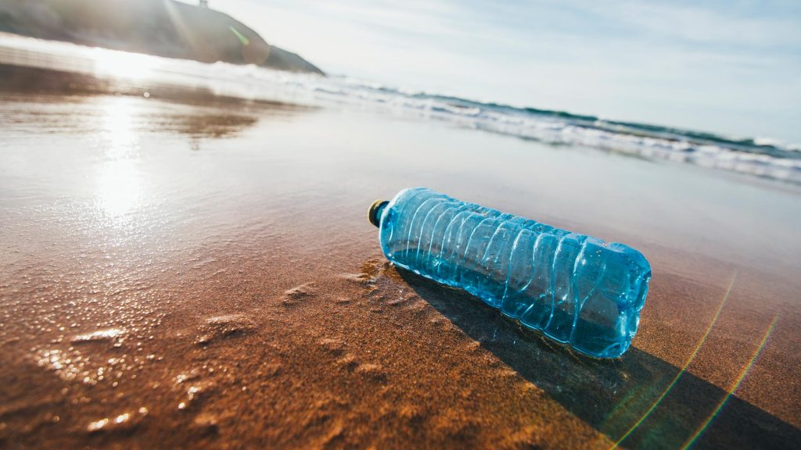

As humans have advanced through time, many injustices have come along the way.
A major issue is about plastic. Every year billions of plastic items
are produced and bought. Most these plastic products are a convenient and portable
product but that convenience comes with a price and adds on some injustices.
This includes environmental problems, how it affects humans, animals and
many other problems. This site is trying to raise awareness about this problem
specifically plastic water bottles.

Firstly, plastic water bottles are made from crude oil. During production, many pollutants are released like nickel, benzene and ethylene oxide which harm the environment. After production, the vehicles that ship bottled water release more pollutants and use gasoline. Also, pollution is a major issue with this product. An example of this is how about 86% of empty plastic water bottles in the United States land in the garbage rather than recycling. Additionally, about 2.7 million tons of plastic is produced each year in America. Plastic bottles end up being incinerated and release many toxic byproducts such as chlorine gas. Furthermore, garbage dumps are usually located near the ocean and that is also where many bottles end up. Many animals in the ocean are affected by this as they can mistakenly take plastic as food. Eating plastic can kill animals like sea turtles, birds and jellyfish. Also, production harms aquifers and other ground water resources. This is a big injustice as harming the earth will have a negative impact in the end and can harm humans in unprecedented ways.
Secondly, worldwide consumption of bottled water is increasing every year and this growth is higher than any other beverage. Billions of liters of this product is sold each year, worth billions of dollars. An example of this is in Canada. Due to the availability of Canada’s water resources, they have big businesses in that industry and sell around 10% of the world’s fresh water each year. With this outstanding growth, no bottled water business wants their production stopped and oppose any action taken against it. Money is seen as the route taken over all the other issues like saving the environment, humans and animals.
Many businesses portray that bottled water is healthier than tap water, however this is not the case. Bottled water affects public health. The water in a plastic bottle eventually mixes with toxins broken down due to the plastic. Once someone drinks this water, BPA and many other toxins can make their way to the consumer’s blood stream. This can cause many health issues like many cancers and liver and kidney damage also as shown on the right. Furthermore during production and shipping of this product affect air quality many toxins released which is a major human need. Also, consumers rarely know where companies are getting the water in bottled water from, it might be from the tap or unclean water. This injustice is seen in many other sectors of the business world as well as the business is seemed more important than anything else.
Due to those reasons, production of bottled water has many injustices, but there are many possible solutions to avoid it. An example is that reusable water bottles can be purchased as an alternative. Stainless steel or BPA free bottles are great options as they do not present any harm to human health. If this alternative is widely used, it will reduce all the injustices and harm bottled water creates for the world. Another solution can be to completely ban the use of all plastic items like straws, bottles, etc in particular areas like countries, cities and provinces. This would reduce the earnings of the businesses and eventually end these types of companies.
Back to top of page